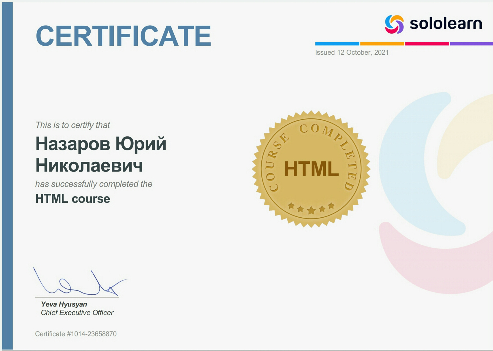
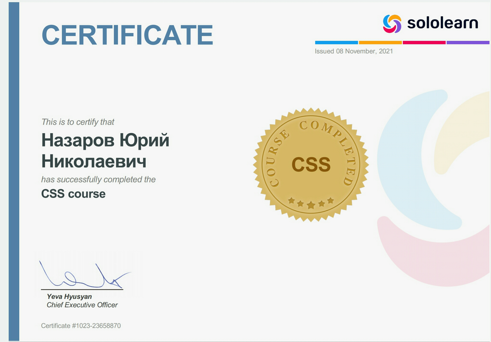

Quoda-это сложный, но простой в использовании редактор исходного кода или IDE с интегрированной поддержкой SFTP/FTP-протокол(ы) сервера и облачные хранилища (Dropbox и Google диск). Вот некоторые из лучших особенностей:• подсветка синтаксиса с темы• Кросс-сессии редактирования• код завершения*• Сниппеты* с текст. Сообщ-синтаксис tabstops и переменные• Расширенная клавиатура• поиск и замена с регулярными выражениями и случае

(в)чувствительность• через SFTP/FTP-протокол(ы) интеграции*• Dropbox или диск Google интеграции*• приложения Google скрипт• поддержка горячих клавиш• видео HTML и markdown предварительный просмотр* (таблетки)Другие функции включают в себя URL-адрес загрузки исходный код, автоматическое определение кодировки, скобок, авто-отступы, линия закладок, выбора цвета, HTML-форматирование, и даже больше - многие из этих непревзойденных других сред разработки Android
или текстовых редакторах!Quoda постоянно обновляется с новыми функциями. Следующие планируются в ближайшее время будут выпущены: поддержка git, Box и onedrive интеграции, пользовательские темы, импорт данных FTP-сервер с помощью FileZilla, автозавершение кода для всех языков программирования и многое другое!Quoda была много внимания положить в свой пользовательский опыт, так что это простой в использовании, быстрый, отзывчивый и очень надежным IDE. Несмотря на большой спектр возможностей, он сделан максимально интуитивно понятным, так что вы можете разработать максимально продуктивно, как это возможно, и сосредоточиться на исходном коде.Quoda в настоящее время поддерживает кодирование в следующие языки программирования: ActionScript С, С, С++, C#,